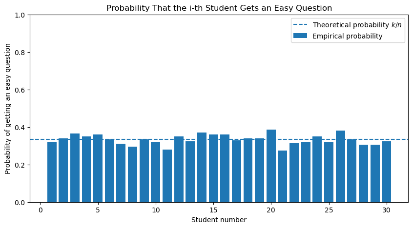
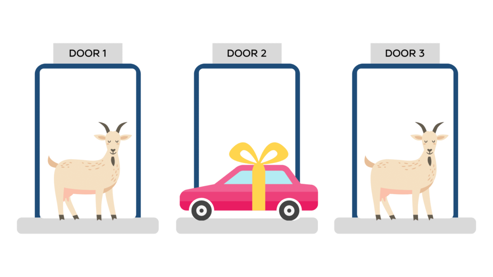
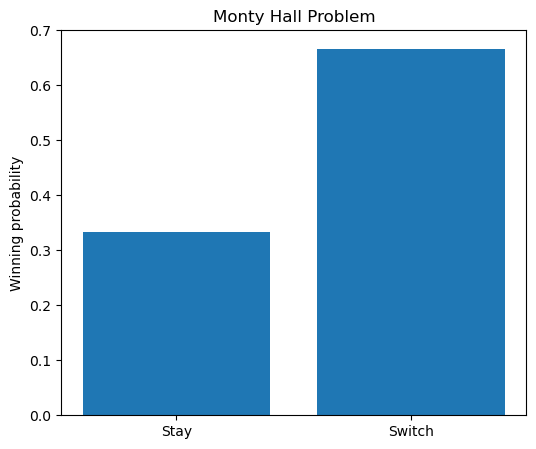
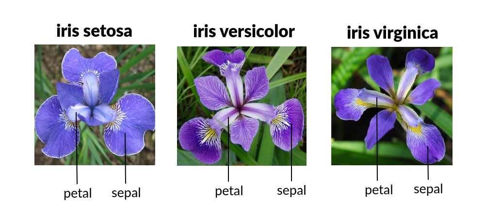
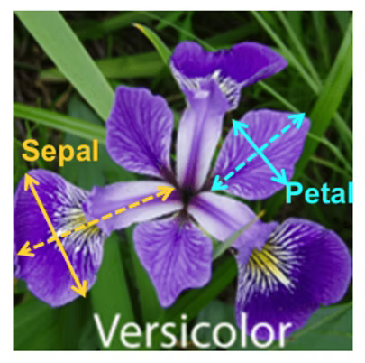
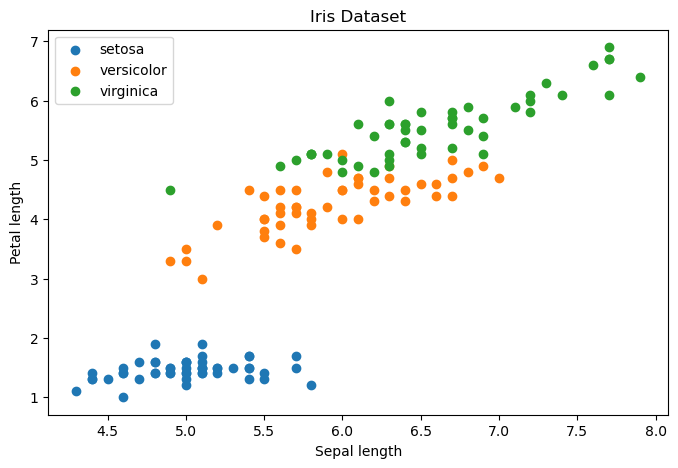
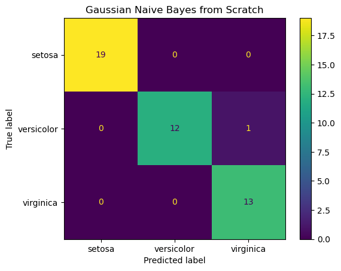

Let \(A,B\in\mathcal F\) be events such that \(P(B)>0\). The conditional probability of \(A\) given \(B\) is defined by
\[
P(A\mid B)=\frac{P(A\cap B)}{P(B)}.
\]
Intuitively, after learning that the event \(B\) has occurred, the sample space is reduced from \(\Omega\) to \(B\), and probabilities are rescaled accordingly.
Rearranging the definition yields
\[
P(A\cap B)=P(A\mid B)P(B),
\]
which is often called the multiplication rule.
More generally, for events \(A_1,\ldots,A_n\) satisfying
Maria is worried about the exam in Probability and would like to maximize her chances of receiving an easy question.
There are \(30\) students waiting in a line to enter the classroom. On the teacher’s desk there are \(30\) tickets, one question written on each ticket. Among these tickets, \(10\) contain easy questions and \(20\) contain difficult questions.
The students enter the classroom one by one. Each student randomly chooses one ticket, takes it with them, and sits down. Thus, after a student chooses a ticket, that ticket is no longer available for the next students.
Maria can choose any position in the line.
Which position should Maria choose? Should she be the first student in the line? The last one? Or perhaps somewhere in the middle?
Show Python code
import numpy as npimport matplotlib.pyplot as pltnp.random.seed(42)# Parametersn =30# number of questions and studentsk =10# number of easy questionsN =200# number of simulated exams# 1 = easy question, 0 = difficult questionquestions = np.array([1]*k + [0]*(n-k))# results[j, i] = 1 if in simulation j the i-th student got an easy questionresults = np.zeros((N, n), dtype=int)for j inrange(N): shuffled_questions = np.random.permutation(questions) results[j] = shuffled_questionsempirical_probs = results.mean(axis=0)theoretical_prob = k/nprint("Theoretical probability:", theoretical_prob)print("Empirical probability for first student:", empirical_probs[0])print("Empirical probability for last student:", empirical_probs[-1])plt.figure(figsize=(10, 5))plt.bar(np.arange(1, n+1), empirical_probs, label="Empirical probability")plt.axhline(theoretical_prob, linestyle="--", label=r"Theoretical probability $k/n$")plt.xlabel("Student number")plt.ylabel("Probability of getting an easy question")plt.title("Probability That the i-th Student Gets an Easy Question")plt.ylim(0, 1)plt.legend()plt.show()
Theoretical probability: 0.3333333333333333
Empirical probability for first student: 0.32
Empirical probability for last student: 0.325

3.2 Example: The Drunk Passenger Problem
On January 1st, a flight from Moscow to Saint Petersburg with exactly \(100\) passengers and exactly \(100\) seats is preparing for boarding. Each passenger has an assigned seat, and all passengers arrive on time.
The first passenger to enter the plane has been celebrating New Year’s Eve all night and is still somewhat drunk. As a result, instead of sitting in his assigned seat, he chooses one of the \(100\) seats uniformly at random.
After that, the remaining passengers board one by one. Each passenger sits in their assigned seat if it is free. If their assigned seat is already occupied, they decide to avoid any arguments and simply choose one of the remaining free seats uniformly at random.
Question: What is the probability that the last passenger to board the plane ends up sitting in their assigned seat?
Show Python code
import numpy as npimport matplotlib.pyplot as pltnp.random.seed(42)n =100N =500successes =0for _ inrange(N): occupied = np.zeros(n, dtype=bool)# Passenger 0 is drunk and chooses a random seat first_seat = np.random.randint(n) occupied[first_seat] =True# Passengers 1, 2, ..., n-2 enterfor passenger inrange(1, n-1):ifnot occupied[passenger]: occupied[passenger] =Trueelse: free_seats = np.where(~occupied)[0] chosen_seat = np.random.choice(free_seats) occupied[chosen_seat] =True# Last passenger entersifnot occupied[n-1]: successes +=1empirical_probability = successes / Ntheoretical_probability =1/2print("Empirical probability:", empirical_probability)print("Theoretical probability:", theoretical_probability)plt.figure(figsize=(6, 5))plt.bar( ["Empirical", "Theoretical"], [empirical_probability, theoretical_probability])plt.ylim(0, 1)plt.ylabel("Probability")plt.title("Drunk Passenger Problem")for i, v inenumerate([empirical_probability, theoretical_probability]): plt.text(i, v +0.03, f"{v:.3f}", ha="center")plt.show()
Suppose you’re on a game show, and you’re given the choice of three doors. Behind one door is a car; behind the others, goats.
You pick a door, say Door 1. The host, who knows what’s behind the doors, opens another door, say Door 3, which contains a goat.
The host then asks:
“Do you want to switch your choice and pick Door 2 instead?”
Question: Is it to your advantage to switch your choice?

Show Python code
import numpy as npN =100_000wins_switch =0wins_stay =0for _ inrange(N): prize = np.random.randint(3) choice = np.random.randint(3) remaining = [ d for d inrange(3)if d != choice and d != prize ] host = np.random.choice(remaining) switch_to = [ d for d inrange(3)if d != choice and d != host ][0] wins_stay += (choice == prize) wins_switch += (switch_to == prize)print("Stay:", wins_stay/N)print("Switch:", wins_switch/N)plt.figure(figsize=(6,5))plt.bar( ["Stay", "Switch"], [wins_stay/N, wins_switch/N])plt.ylabel("Winning probability")plt.title("Monty Hall Problem")plt.show()
Stay: 0.33312
Switch: 0.66688

5 Conditional Probability in Large Language Models
Large language models such as ChatGPT are built around conditional probabilities.
When generating text, the model repeatedly estimates probabilities of the form
the model assigns a very high probability to the word
“Paris”
and a very small probability to words such as
“banana”.
At every step, the model chooses the next word based on these conditional probabilities.
Although modern AI systems use extremely sophisticated neural networks, conditional probability remains one of the fundamental mathematical ideas behind them.
In this sense, the formulas studied in this lecture are part of the mathematical foundation of modern artificial intelligence.
6 Naive Bayes Classifier
One of the simplest machine learning algorithms is the Naive Bayes classifier.
Suppose that an object belongs to one of several classes
The flower is then classified as belonging to the species with the largest posterior probability.


Show Python code
#Load the Iris Datasetimport numpy as npimport pandas as pdimport matplotlibimport matplotlib.pyplot as pltimport seaborn as snsfrom sklearn import datasetsiris = load_iris()X = iris.datay = iris.targetdf = pd.DataFrame( X, columns=iris.feature_names)df["species"] = yprint(iris.DESCR)df.head()
.. _iris_dataset:
Iris plants dataset
--------------------
**Data Set Characteristics:**
:Number of Instances: 150 (50 in each of three classes)
:Number of Attributes: 4 numeric, predictive attributes and the class
:Attribute Information:
- sepal length in cm
- sepal width in cm
- petal length in cm
- petal width in cm
- class:
- Iris-Setosa
- Iris-Versicolour
- Iris-Virginica
:Summary Statistics:
============== ==== ==== ======= ===== ====================
Min Max Mean SD Class Correlation
============== ==== ==== ======= ===== ====================
sepal length: 4.3 7.9 5.84 0.83 0.7826
sepal width: 2.0 4.4 3.05 0.43 -0.4194
petal length: 1.0 6.9 3.76 1.76 0.9490 (high!)
petal width: 0.1 2.5 1.20 0.76 0.9565 (high!)
============== ==== ==== ======= ===== ====================
:Missing Attribute Values: None
:Class Distribution: 33.3% for each of 3 classes.
:Creator: R.A. Fisher
:Donor: Michael Marshall (MARSHALL%PLU@io.arc.nasa.gov)
:Date: July, 1988
The famous Iris database, first used by Sir R.A. Fisher. The dataset is taken
from Fisher's paper. Note that it's the same as in R, but not as in the UCI
Machine Learning Repository, which has two wrong data points.
This is perhaps the best known database to be found in the
pattern recognition literature. Fisher's paper is a classic in the field and
is referenced frequently to this day. (See Duda & Hart, for example.) The
data set contains 3 classes of 50 instances each, where each class refers to a
type of iris plant. One class is linearly separable from the other 2; the
latter are NOT linearly separable from each other.
.. topic:: References
- Fisher, R.A. "The use of multiple measurements in taxonomic problems"
Annual Eugenics, 7, Part II, 179-188 (1936); also in "Contributions to
Mathematical Statistics" (John Wiley, NY, 1950).
- Duda, R.O., & Hart, P.E. (1973) Pattern Classification and Scene Analysis.
(Q327.D83) John Wiley & Sons. ISBN 0-471-22361-1. See page 218.
- Dasarathy, B.V. (1980) "Nosing Around the Neighborhood: A New System
Structure and Classification Rule for Recognition in Partially Exposed
Environments". IEEE Transactions on Pattern Analysis and Machine
Intelligence, Vol. PAMI-2, No. 1, 67-71.
- Gates, G.W. (1972) "The Reduced Nearest Neighbor Rule". IEEE Transactions
on Information Theory, May 1972, 431-433.
- See also: 1988 MLC Proceedings, 54-64. Cheeseman et al"s AUTOCLASS II
conceptual clustering system finds 3 classes in the data.
- Many, many more ...
sepal length (cm)
sepal width (cm)
petal length (cm)
petal width (cm)
species
0
5.1
3.5
1.4
0.2
0
1
4.9
3.0
1.4
0.2
0
2
4.7
3.2
1.3
0.2
0
3
4.6
3.1
1.5
0.2
0
4
5.0
3.6
1.4
0.2
0
Show Python code
import matplotlib.pyplot as pltplt.figure(figsize=(8,5))for species inrange(3): mask = y == species plt.scatter( X[mask,0], X[mask,2], label=iris.target_names[species] )plt.xlabel("Sepal length")plt.ylabel("Petal length")plt.legend()plt.title("Iris Dataset")plt.show()

Naive Bayes assumes that, within each class, every feature follows a normal distribution. The orange curve is the normal distribution estimated from the data. How reasonable does this assumption look?
In practice, we use logarithms to avoid numerical underflow.
Show Python code
X_train, X_test, y_train, y_test = train_test_split( X, y, test_size=0.3, random_state=42)
In short, the algorithm does this:
For each species, estimate the mean and variance of every feature.
For a new flower, compute how likely its measurements are under each species.
Multiply by the prior probability of each species.
Choose the species with the largest posterior score.
This is exactly Bayes’ formula combined with the Gaussian assumption and the naive independence assumption.
Show Python code
class GaussianNaiveBayes:def fit(self, X, y): #This function trains the modelself.classes = np.unique(y) #This finds the different classes.self.means = {} #These dictionaries will store the parameters learned from the data.self.variances = {}self.priors = {}for c inself.classes: X_c = X[y == c]self.means[c] = X_c.mean(axis=0)self.variances[c] = X_c.var(axis=0)self.priors[c] =len(X_c) /len(X)returnselfdef gaussian_log_density(self, x, mean, variance): eps =1e-9 variance = variance + epsreturn-0.5* np.log(2* np.pi * variance) - ((x - mean)**2) / (2* variance)def predict_one(self, x): #This predicts the class of one flower. scores = {} #This dictionary will store one score for each class.for c inself.classes: log_prior = np.log(self.priors[c]) log_likelihood =self.gaussian_log_density( x,self.means[c],self.variances[c] ).sum() scores[c] = log_prior + log_likelihoodreturnmax(scores, key=scores.get)def predict(self, X):return np.array([self.predict_one(x) for x in X])
To evaluate the performance of our classifier, we compare the true species of each flower in the test set with the species predicted by the model.
A useful tool for this purpose is the confusion matrix. The rows correspond to the true species, while the columns correspond to the predicted species.
Ideally, all observations should lie on the main diagonal, indicating correct classifications. Entries outside the diagonal represent classification errors.
The confusion matrix not only tells us how accurate the classifier is, but also reveals which species are most frequently confused with one another.
Show Python code
cm = confusion_matrix(y_test, predictions)disp = ConfusionMatrixDisplay( confusion_matrix=cm, display_labels=target_names)disp.plot()plt.title("Gaussian Naive Bayes from Scratch")plt.show()

Show Python code
# Inspect estimated parametersfor c in model.classes:print("Class:", target_names[c])print("Prior:", model.priors[c])print("Means:", model.means[c])print("Variances:", model.variances[c])print()
Therefore, in this particular example, the classifier is driven almost entirely by the likelihoods
\[
P(X\mid \text{species}).
\]
In many real-world applications, however, the classes are highly imbalanced, and the prior probabilities play a crucial role.
7 Machine Learning in Practice
In this lecture, we implemented the Gaussian Naive Bayes classifier from scratch in order to understand the mathematics behind the algorithm. However, in practice, machine learning models are usually already implemented in specialized libraries such as Scikit-Learn, PyTorch, TensorFlow, XGBoost, and LightGBM.
For example, the entire Naive Bayes classifier can be trained and evaluated with only a few lines of code:
model = GaussianNB()model.fit(X_train, y_train)predictions = model.predict(X_test)
Similarly, many other popular machine learning models are available through simple interfaces:
Linear Regression
Logistic Regression
Naive Bayes
Decision Trees
Random Forests
Gradient Boosting
XGBoost
LightGBM
Support Vector Machines (SVM)
K-Nearest Neighbors (KNN)
Neural Networks
Deep Learning Models
As a result, much of the day-to-day work of a data scientist involves selecting, training, evaluating, and tuning models rather than implementing them from scratch.
Unfortunately, many practitioners learn how to use these tools without fully understanding the underlying mathematics. This can be dangerous: when a model behaves unexpectedly, produces misleading predictions, or violates its assumptions, it is often impossible to diagnose the problem without understanding the theory behind the algorithm.
For this reason, our goal in this course is not only to learn how to use machine learning tools, but also to understand the probabilistic and statistical ideas that make these algorithms work.
Although modern AI systems use much more sophisticated models, probabilistic reasoning and conditional probabilities remain central ideas throughout machine learning and data science.